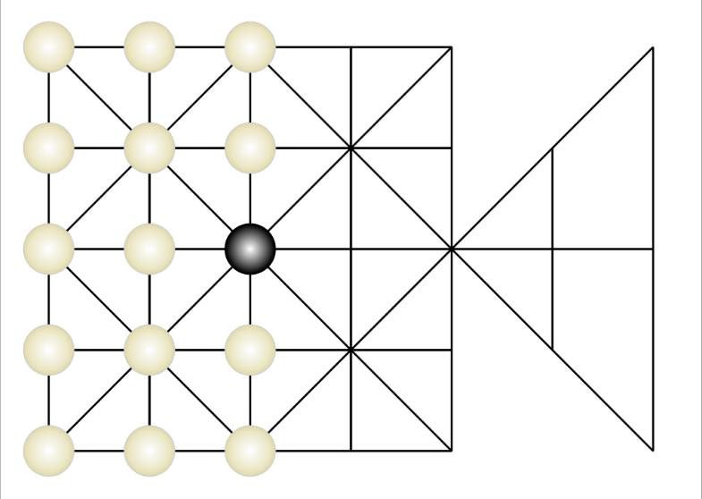

Jogo da Onça "Adugo"

Tutorial do Jogo:
Posicionamento Inicial:
- Onça: A onça começa no centro do tabuleiro (ponto central).
- Caçadoras: As caçadoras começam nas interseções ao redor do tabuleiro, em pontos de forma triangular.
Movimento das Peças:
- Onça: Pode se mover em qualquer direção (horizontal, vertical ou diagonal), mas sempre para uma interseção adjacente. A onça também pode "pular" sobre uma caçadora, capturando-a. Ao pular, a onça avança dois pontos: o ponto da caçadora e o ponto após ela. Uma caçadora que foi "pulsada" é retirada do jogo.
- Caçadoras: Elas também se movem de forma semelhante, mas não podem pular a onça. O movimento delas é sempre para uma interseção adjacente, podendo avançar uma casa de cada vez.
Captura
- Onça: Para capturar uma caçadora, a onça precisa pular sobre ela (como em um movimento de dama), e a peça da caçadora é retirada do tabuleiro.
- Caçadoras: Para capturar a onça, as caçadoras precisam cercá-la de tal forma que ela não possa se mover para nenhuma casa válida.
Captura
- Onça: Para capturar uma caçadora, a onça precisa pular sobre ela (como em um movimento de dama), e a peça da caçadora é retirada do tabuleiro.
- Caçadoras: Para capturar a onça, as caçadoras precisam cercá-la de tal forma que ela não possa se mover para nenhuma casa válida.
Vencendo o Jogo
- Onça: Vence o jogo se capturar todas as caçadoras ou bloquear todos os seus movimentos, de forma que as caçadoras não possam mais se mover.
- Caçadoras: Vencem se cercarem a onça de forma que ela não possa se mover ou se capturarem a onça.
Descrição do Jogo:
O jogo da onça é um dos mais tradicionais jogos de origem brasileira, inventado pelos indígenas antes mesmo da colonização portuguesa. Tradicionalmente, as partidas do jogo da onça eram feitas com pedras e marcações na terra.
Jogado por dois participantes, o jogo da onça é composto por uma onça e os caçadores ou cães. O objetivo do jogador que controla a onça é comer os caçadores ou cães; já o objetivo do oponente é cercar a onça.
O tabuleiro é composto por marcações de trajeto que indicam por onde as peças podem caminhar.